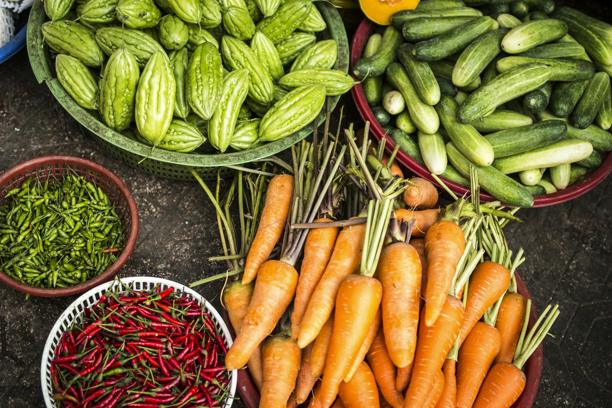

Empowering farmers with modern agricultural solutions, sustainable farming practices, and innovative technologies for a productive and environmentally responsible future.

Stackly Agriculture is dedicated to supporting farmers and agricultural communities through innovative farming solutions and sustainable cultivation practices.
Our mission is to improve productivity, optimize resources, and create long-term value while preserving the environment.
To become a trusted leader in modern agriculture by promoting sustainable farming practices, empowering farming communities, and driving agricultural innovation for future generations.
Our mission is to provide innovative agricultural solutions, enhance farm productivity, support sustainable cultivation methods, and help farmers achieve long-term growth through technology, expertise, and responsible resource management.
Our commitment to innovation, sustainability, and farmer success has created a positive impact across agricultural communities.
Helping farmers improve productivity and adopt sustainable farming practices.
Supporting efficient cultivation and responsible land management initiatives.
Delivering trusted agricultural expertise and innovative farming solutions.
A dedicated team committed to agricultural excellence and farmer success.